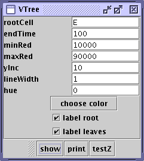

As shown above, the dialog has been changed:
The endTime line allows the cutoff of the tree to be controlled
independently of the end time of the underlying data.
Two check boxes now control the annotation of the graph:
The root cell can be labeled or not
on the display or postscript file;
The leaves can be labeled or not.
Other changes
Series from the Mohler lab were showing polar body naming error at time point 1. This was traced to line 1143 in Identity and a fix introduced.
This is reached off the View menu line "3D2 View". The user interface differs from the existing Image3D but eventually we will probably phase that one out. The user can control rotation about each of the embryonic axes independently and can Undo rotations or Restore the image to its original ADL state. There is also a position button that moves the viewer toward the embryo. We may want to provide more general control in this area later on.
A key feature of this UI is the added "Talisman" which shows the current orientation of the embryo. Each of the three axes is shown and the ends are tipped with colored spheres that denote the Dorsal (red), Ventral (green), Anterior (magenta), Posterior (cyan), Left (orange), Right (yellow) positions of the embryo. The axes are sized nominally in proportion to the embryo, with anterior/posterior the longest, dorsal/ventral midsized, and left/right smallest.
The image still supports mouse actions but if those are used the undo and restore features are lost.
AceTree can be run with an argument that is the path
to a config file, such as,
java -jar AceTree.jar myconfig.dat.
If it happens that the config file
is given just as a file name, e.g., myconfig.dat, AND
the zipFileName parameter is also just a file name with
no "pathy" stuff, e.g., myzipfile.zip, then AceTree would
fail to find the zip file from this launch. All these things
would still work if you use the File..open config file menu
of AceTree: the failure is when one uses the argument form.
Anyhow, that will now work properly with this version.
Consider first the case of ancestral trees.
Say you are looking at series /nfs/murray/pha4red/102405. From the trees..ancestral menu you open the lineage. Size the vertical dimension for convenient viewing and set the root cell to P0. At this point, press the print button.
A file open dialog comes up. Navigate to a location you would
like to store the image in and give it a name ending in .png
such as
102405ancestral.png
then click the save button. The screen appearance will
look bad for about 30 seconds on a print of this size (350 cells)
after which it will redraw correctly.
In your browser, browse to the location where you stored the .png
file and open the page whose name is the same as the file name but
whose extension is html, for example,
102405ancestral.html
This will provide a very convenient viewing platform for this very
wide tree.
Next consider the case of vertical trees.
One option is to produce a .png file from the vertical tree. To do that, set the parameters to your liking and click first the show button. Then, on the original vtree dialog, click the print button and follow the same procedure as was described for the ancestral trees above. The key to following this option is to give the file a .png extension, since in this case the extension you use controls which path through the code is taken.
If, instead, you want a postscript version of the vtree, then...
first be aware that it will not be necessary to set the spacing to one as has been true in the past. This code will produce a viewable postscript file with a setting like 10 for the spacing and 2 for the line width. In principle, it is dealer's choice on those settings. We shall see.
click the print button but in the file open dialog and navigate to the directory you want the postscript file to go to, then give the file name with the .ps extension. When you click the save button the postscript file will be produced. It will be compressed so as to fit on a standard page but it can be zoomed out and retains good quality. Maybe someday we will learn how to tell postscript programs and devices that we really want the file to produce a long page. In the meantime, I hope the approach here will be an improvement.
This calculation is much slower than our previous method. To estimate the red expression for a single time point at the 150 cell stage takes about 12 seconds on a standard linux workstation.
Two buttons are provided: Run starts the calculation from a thread; Stop lets you signal a stop at the end of the current time point.
A checkbox is provided and a text area. The text area will report starting and elapsed time to complete the request. If the "Send results here" checkbox is checked, at the end of each time point the results for each cell in sorted order are reported. The report corresponds to the data which are placed in the following nucleus parameters for the cell: n.rweight, n.rcount, n.rsum. The weight is a normalized red intensity corrected for background where normalized means it is the sum of all expression times 1000 divided by the total number of points. So it is the intensity per 1000 pixels in the nucleus. The rcount thing is the same quantity but for the background. The rsum thing is the total number of nuclear pixels.
My concept is that the user will experiment with settings while requesting one or a small number of time points where expression is prominent. Then, once the settings are known, a run of the full series can be taken. This will tie up the workstation for 20 minutes or more.
After the run completes, the values are in the internal AceTree copy of the nuclei data. Use the File..Save nuclei as zip feature to create a permanent record. The tree programs will not show the results until you restart AceTree with that new zip file.
Besides that, I had requests to improve the save2d and save3d feature whereby one can save an image series for use in constructing a movie. There were several parts to the request. First, as things were, the images were always stored in the directory where you were running AceTree. This is awkward if you are using the new /nfs/waterston/tools/AceTree.jar. So, I have added a "feature" that notices the first time you try to save something and pops up a fileOpenDialog where you are to select the directory where you want the images to go. That directory will persist for your current AceTree session. If you do not select a directory, then AceTree will not save files for you.
An issue with this is the manner of navigating in the fileOpenDialog. To get just a directory, which is what you want here, you must navigate in the fileOpenDialog without hitting Open until you are at the directory you want. And you must not get all the way to a file. These same limitations apply in the open dialog used by EmbryoDB. It's not a big deal, but you need to get used to it.
Note that there is only one directory for both 2d and 3d images.
Besides that, it had been noted that once you have checked that you want to save 2d images, whereas you get images every time you press the next or previous keys, there was nothing equivalent for the up/down keys that would facilitate getting a z stack. That is now provided.
Finally, the manner of saving of images has been such that the screen must be kept in the application during a sequence of saves such as would occur if you set for saving and then used the "play" control to sequence through time. If one is saving hundreds of time points, this can result in tying up the screen for many minutes. The request was made for an approach that would be able to save images essentially in the background so the workstation could be used for other purposes during this operation.
This is a reasonable request. I was able to find an approach that works fine with save2d. It involves using an additional jar file called ij-ImageIO_.jar which I will put in the tools directory. It looks like this will also speed up the process of saving a large number of images.
Unfortunately, I have not been able to find a comparable way to do this for the Image3D things. Java3d is not as well supported as regular java. I tried enough things to be sure that to go after this involves an uncertain amount of discovery time at a minimum, and could involve hitting the wall altogether. So, the request for off-screen saving is only partially met.
To a certain extent, the config file changes are the tip of an iceberg, in that the method of reading the zipped nuclei files (originally from StarryNIte) has been completely revised to make the zipped content itself the determinent of what is there rather than have the user tell the program. There were two motivations for the changes: first, to make a simpler specification of the config possible; second, to move toward a scheme whereby the config file will become the "record" in a database that will track our lineaged embryos. The first change makes possible the following as the config file for embryo 081505:
zipFileName, /nfs/gs/shared/waterston/benchmarks/081505/081505-edit.zip typical image, /gs/shared/waterston/image-series/081505/zip/081505_L1-t100-p15.zipIn this case, the zipFileName is the same as in previous versions, but only one additional line is necessary, the "typical image" line. This line is parsed to find the information previously provided by the "tif directory" and "tifPrefix" lines. This avoids the occasional errors introduced by users in those arkane parameters.
"naming method" now defaults to NEWCANONICAL but the parameter can still be used to set MANUAL or STANDARD naming.
If the "ending index" parameter is omitted, which it should be in most cases, the value will be obtained from the last nuclei file in the data. However, it is now possible to override this by using the "ending index" parameter with a value that is either smaller or larger than the actual last time point in the nuclei files.
The optional "axis" parameter is still available but the behavior is slightly different. First, it only has an effect if NEWCANONICAL naming is in force. Second, the user must arrange to "force" the names of the nuclei in the first time point represented in the nuclei files. Prior to such forcing, all nuclei will carry "Nuc" designations. Once the names have been forced and the RebuildAndRename function applied, the nuclei can be saved as zip and subsequent usage of that series will carry the names assigned. Notice that there is no issue here of setting a "later" start time. AceTree will start at time one but real naming will only start at the time corresponding to the first nuclei files. If images exist for the times prior to the nuclei start, those images will come up in AceTree unannotated.
In this approach, as things are now, the most complicated config file a user would need to specify is:
zipFileName, /nfs/gs/shared/waterston/benchmarks/081505/081505-edit.zip typical image, /gs/shared/waterston/image-series/081505/zip/081505_L1-t100-p15.zip ending index, 210 axis, AVRHere, the user is overriding the nuclei files by asking to look at about 15 time points beyond the edited lineage. Naming will default to NEWCANONICAL but since an axis is specified the names in the first nuclei file must be forced. In this case she has requested an end time of 210 which goes beyond the last nuclei file. There will be no annotation on images past 195 but she is free to annotate those images to extend the series. The axis specification given is wrong but AceTree would honor it once the starting image names were forced.
The capability offered in this release of AceTree is just a beginning in the implementation described above. If the config file name has the extension ".xml" then it will be read as an XML config file. Here is the basic one:
<?xml version='1.0' encoding='utf-8'?> <embryo> <nuclei file="/nfs/gs/shared/waterston/benchmarks/081505/081505-edit.zip"/> <image file="/gs/shared/waterston/image-series/081505/zip/081505_L1-t100-p15.zip"/> </embryo>The first line and the empty line following it are required in any XML file. The four lines starting with <embryo> constitute the actual config file. In this version there are three xml tags: embryo; nuclei; image. The nuclei tag as one "attribute" which is called "file" and its value is the zip file name enclosed in quotes. Notice that that line ends with "/>". All tags must have an end and that type of end keeps everything together in one element. I plan to use that form as much as possible.
The alternative is to have an opening like <embryo> and then later a closing like </embryo>.
As soon as I can get around to it, I will modify SNLauncher to create its config file in xml format.
If you plan to use the optional tags -- naming, end, axis -- then some care will be required. Here are sample lines that could be added to an xml config file:
<naming method="MANUAL"/> <end index="210"/> <axis axis="avr"/>If you fail to end the tags with "/>" the program will break. Basically, xml is a pain in the neck to use manually, but I have become pursuaded that it is preferable to home grown formats especially since tools are now available to provide data base capabilities if xml format is used. At some point I will write a program (script in JIM speak) to convert existing config.dat files to config.xml files and then convert everything. After that, only xml files will be accepted by AceTree.
There are three new features in this release:
EditImage is the object you bring up when you click Edit nuclei from the edit menu. To provide a UI for the changes introduced here, the ImageWindow has been revised also. Now, instead of a tabbed structure, the window has a toolbar which offers Help and Properties. The capability to change colors of annotations, etc., previously on the Properties tab is now offered as a dialog box that comes up when the Properties button is clicked. The Help button brings up help for the EditImage window, not the ImageWindow.
The EditImage window no longer has its attached user interface for cell addition and editing. That is now provided as a floating dialog box when you click on the AddOne button. It functions identically to its previous attached form.
If you click on the AddSeries button, a new dialog comes up which is designed to permit you to quickly fill in missed cells in a series or extend a cell beyond an incorrect cell death. Basically, you start by right clicking on a cell that needs extending. You navigate forward and drop cells by left clicking. If you leave a gap then drop one the program interpolstes intermediate cells up to where you are. If you come to a point where the nuclei files have found the cell you are extending, you right click on that cell to link up. At that point you need to do a rebuildAndRename using the button provided. Prior to that the program has been renaming the cells you added but not looking beyond that cell.
There are some radio buttons to manage. You choose one to control how mouse clicks will be interpreted. SetStart to anchor your additions to an existing cell. Add to drop new cells. Link to link to one that is already there. Nothing to make the dialog ignore mouse clicks (could be handy).
The keyboard arrow keys are handled by this feature so you can do navigation with the keyboard and cell dropping with the mouse.
"Deaths/Adjacencies" is reached from the Edit menu. It is a dialog box containing a toolbar and a text box. When it comes up it writes a simple explanation. The deaths button produces a list of all cell deaths in your series. All the lists brought up by this dialog are queryable. That means if you click on a line in the output it will bring you to the point that line is describing -- for example the point at which a given cell is said to have died. Most deaths are lineaging errors so this tool is designed to encourage you to deal with those errors, presumably by using it together with the EditImage feature.
The other two buttons are meant to support investigation of questionable time point to time point linkages or cell divisions. They bring up a list of cells near the "current cell". "Adjacent back" takes the current cell and shows the cells at the current time that are near it in one list and the cells at the previous time that are near it in a second list. "Adjacent forward" takes the current cell and lists the cells that are near it in the next time point. The items in the list give the distance from the reference cell to the specified cell and rank them from closest to most distant. Only a few cells are listed. There is a help line on the list that details what the items on each line stand for.
Depth views menu item on Views menu allows the construction of images representing an xz or yz slice at a specified time. The user sets the time and the x or y location for the slice. The image is created by working down the stack of planes at the specified time. Nuclei circles are shown and a left click annotates them with cell names.